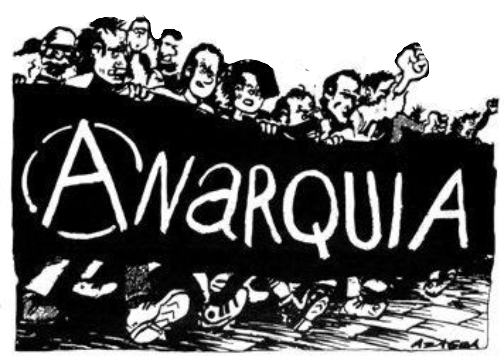
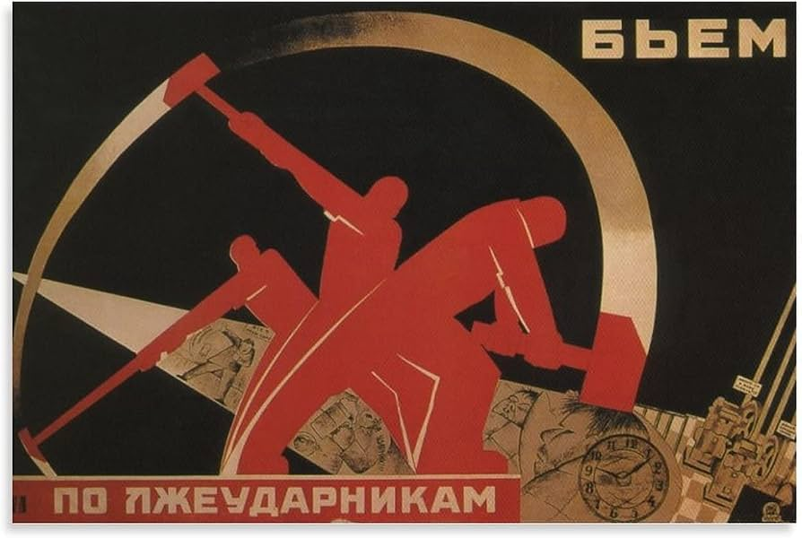
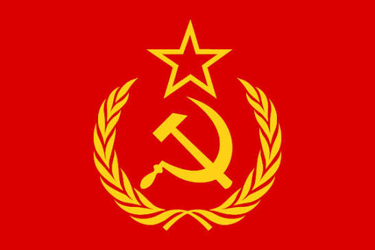
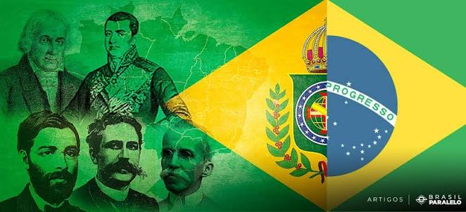

Anarquismo
Por: Isabela
o anarquismo é uma filosofia política onde é apoiada a ideia de necessidade de uma abolição do estado e do governo como conhecemos hoje e de qualquer tipo de hierarquia, onde defende uma forma de vida igualitária visando acabar com as desigualdades erradicando qualquer tipo de governo ou sistema sendo até mesmo conhecido como socialismo libertalitário por acreditar em um sentido do coletivo, e também ser

Socialismo
Por: Isabela
Uma filosofia e sistema político-econômico que defende a propriedade coletiva ou estatal dos meios de produção (fábricas, terras, recursos). Seu objetivo central é reduzir as desigualdades sociais e redistribuir riquezas de forma justa. Diferente do anarquismo, o socialismo tradicional defende a utilização ou reestruturação do Estado como uma ferramenta de transição para gerenciar a economia e garantir o bem-estar social.

Comunismo
Por: Isabela
Uma ideologia política e socioeconômica que busca o estabelecimento de uma sociedade sem classes sociais, sem propriedade privada dos meios de produção e sem a existência do Estado. Na teoria marxista, é a etapa final do desenvolvimento social (alcançada após o socialismo), onde a produção é organizada de forma comunitária e cada indivíduo contribui segundo suas capacidades e recebe segundo suas necessidades.

Liberalismo
Por: Isabela
Uma corrente política e econômica fundada no princípio da liberdade individual, nos direitos fundamentais (como vida, liberdade e propriedade) e na igualdade perante a lei. Defende a limitação do poder do Estado, o livre mercado (com pouca intervenção estatal na economia) e a democracia representativa, sustentando que a iniciativa privada e a autonomia individual são os motores do progresso.
Conservadorismo
Por: Isabela
Uma filosofia política e social que enfatiza a importância de preservar a ordem social, as tradições, a moralidade e as instituições estabelecidas (como família, religião e leis). Defende que as mudanças na sociedade devem ocorrer de forma gradual e orgânica, evitando revoluções ou reformas radicais que possam desestabilizar a coesão social e a estabilidade.
